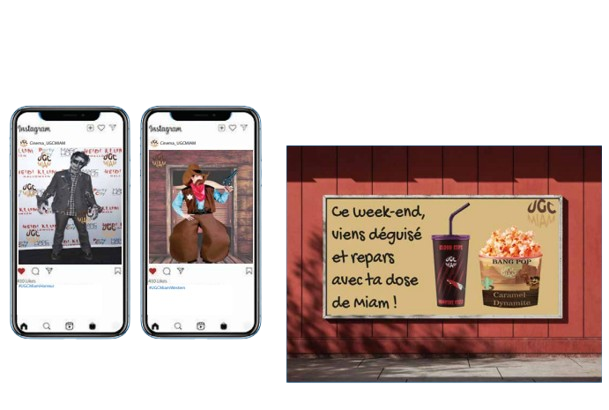

UGC MIAM - Identité de marque et stratégie marketing
Présentation du projet
Ce projet consiste en la création complète d'une identité visuelle pour UGC MIAM, une marque fictive de produits alimentaires destinés aux cinémas UGC. De la conception du logo jusqu'au développement d'une stratégie marketing cohérente, ce projet explore tous les aspects de la création de marque.
Création de l'identité visuelle
Le logo a été conçu pour évoquer à la fois l'univers du cinéma et celui de la gourmandise. Les mockups produits montrent l'application de cette identité sur différents supports : packaging, gobelets, sacs et supports publicitaires. L'objectif était de créer une image de marque forte et reconnaissable qui s'intègre naturellement dans l'environnement UGC.
Stratégie marketing
Une stratégie marketing complète a été développée pour accompagner le lancement de la marque. Elle comprend l'identification des cibles, le positionnement produit, les canaux de communication et les actions promotionnelles. L'approche vise à créer une expérience client mémorable tout en renforçant l'image premium d'UGC.